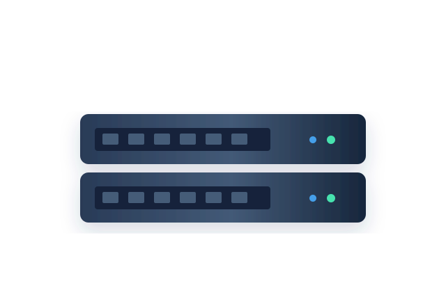

SERVICIOS PROFESIONALES
Sistemas que funcionan.
Sin complicaciones.
Del plano a la puesta en marcha. Diseñamos la solución, instalamos la infraestructura y acompañamos su funcionamiento.
03 / NETINFRADESLIZA PARA EXPLORAR ↓
01 / NUESTRO ENFOQUE
De componentes a soluciones completas.
La infraestructura bien diseñada no es la suma de sus equipos, sino la forma en la que trabajan juntos. Por eso cada servicio responde a una necesidad real.
SERVICIO / 01
Conectividad con sentido.
Diseño de topologías, segmentación mediante VLAN, planificación Wi-Fi y cableado estructurado para empresas y centros educativos.
- Diseño LAN y redes inalámbricas
- Configuración de routers y switches
- Documentación de red
SERVICIO / 02
De la caja al sistema.
Montaje ordenado de racks, paneles de parcheo, servidores, puntos de acceso y sistemas de alimentación ininterrumpida.
- Instalación física y etiquetado
- Puesta en marcha y pruebas
- Inventario técnico de equipos
SERVICIO / 03
Preparados para seguir.
Supervisión y mantenimiento para detectar incidencias, documentarlas y asegurar la continuidad de los servicios informáticos.
- Diagnóstico y mantenimiento preventivo
- Revisión de copias y almacenamiento
- Atención y seguimiento de incidencias
